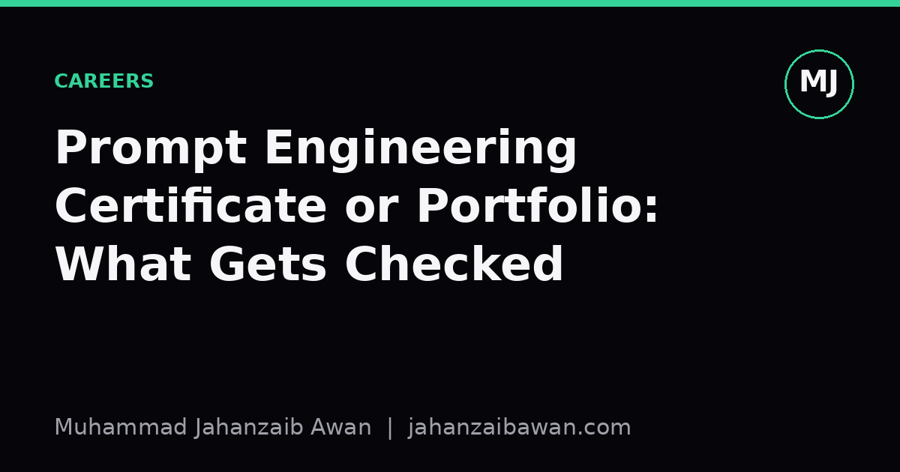

Prompt Engineering Certificate or Portfolio: What Gets Checked
When a hiring manager has ten minutes to assess a candidate, one artefact tells them far more than the other. Here is why the portfolio usually wins.

Two artefacts, two different signals
A certificate and a portfolio claim to show the same thing: that you can work effectively with large language models. In practice they signal very different things, and a hiring manager scanning applications for a role that touches prompt design, evaluation, or applied LLM work knows this immediately. A certificate tells them you completed a structured course and passed whatever assessment sat at the end of it. A portfolio tells them what you actually built, what broke, and how you fixed it.
The asymmetry matters because prompt engineering as a discipline is still young and loosely standardised. There is no universally agreed syllabus, no shared exam board, and no consistent bar for what counts as a pass. A certification from one provider might require a multiple choice quiz on prompt patterns; another might require submitting a working pipeline. Without knowing the provenance, a hiring manager cannot easily tell which kind of credential they are looking at, so many default to treating certificates as a weak, low information signal: nice to see, rarely decisive.
A portfolio, by contrast, is self-documenting. If you show three prompts for the same task, each with a short note on why you changed them and what the evaluation numbers looked like before and after, the hiring manager can judge your reasoning directly. They do not need to trust an external body's assessment criteria. They can see your criteria, applied to your own problem, with your own data.
What a hiring manager actually does with ten minutes
Most hiring managers do not read every line of every project. They skim for a small number of signals: does this person define a clear task, do they measure something rather than just eyeballing outputs, and do they understand why their approach worked or failed. A portfolio entry that says 'I tried five prompt variants for a customer support classifier and measured accuracy on a held out set of 200 labelled tickets, improving from 71 percent to 84 percent by adding one worked example and constraining the output format' gives all three signals in two sentences.
Compare that to a certificate line on a CV that reads 'Certified Prompt Engineering Professional, issued 2024'. It tells the reader nothing about the task, the measurement, or the reasoning. It is not worthless; it suggests some baseline exposure to terminology like few-shot examples, chain of thought, or temperature settings. But it cannot substitute for evidence of judgement, and judgement is exactly what the role requires, because prompting a model well is rarely about knowing the right vocabulary. It is about designing a fair test, noticing when your test is leaking information it should not have, and knowing when a simpler baseline already does the job.
This is where the gap becomes concrete. Imagine two candidates both claim they can improve a summarisation prompt. Candidate A lists the certificate. Candidate B shows a short writeup: a baseline prompt scoring a ROUGE-L of 0.31 against a reference set, a revised prompt with explicit length and tone constraints scoring 0.38, and a note that the improvement held on a separate batch of documents collected a month later, not just the original development set. Candidate B has demonstrated the one thing a certificate cannot easily prove: that their result survives contact with new data, rather than being an artefact of tuning on the same examples they evaluated on.
Why leakage-aware evaluation is the real differentiator
The most common failure I see in prompt engineering writeups, portfolio or otherwise, is quietly reusing the same small set of examples for both designing the prompt and judging whether it worked. If you tweak a prompt until it performs well on twenty examples, then report its performance on those same twenty examples, you have not measured generalisation; you have measured how well you can overfit to a tiny sample by hand. This is leakage in spirit even without a formal train/test split, and it is exactly the kind of mistake a sharp hiring manager will probe for in an interview.
A portfolio that explicitly separates a development set, used while iterating on wording and structure, from a held-out set, touched only once at the end, demonstrates that you understand this risk. It is a small methodological choice but it says a great deal: this person thinks about their own biases as an evaluator, not just about the model's behaviour. That is a rarer and more valuable signal than fluency with prompt templates, which can be picked up from any decent tutorial in an afternoon.
None of this means certificates are useless. They can help with keyword matching in automated screening, and they show a baseline willingness to invest time in structured learning, which matters for candidates with no other track record. But once a human actually reviews the application, and especially once they reach an interview stage where they ask you to walk through a real example, the portfolio is what gets interrogated. Nobody asks you to defend a multiple choice score; they ask you to defend a result.
The practical takeaway
If you have limited time, spend it building two or three small, honest case studies rather than collecting another credential. Pick a narrow task, define a metric before you start tweaking prompts, keep a held-out set you do not touch until the end, and write down what failed as well as what worked. A single page showing a baseline, an iteration, a held-out result, and a short reflection on why the improvement happened will outperform a certificate on almost any hiring manager's desk, because it answers the only question that actually matters: can this person produce a reliable result and explain it clearly.